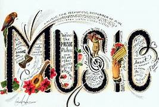
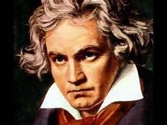
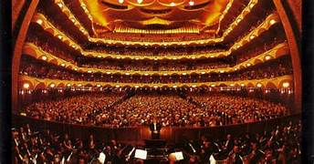
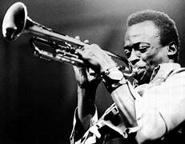
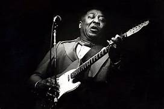
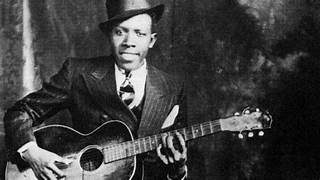
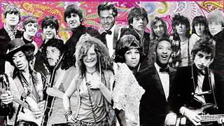

მუსიკა (ბერძ. μουσική musike) — ხელოვნების სახე, რომელიც სინამდვილეს
ასახავს მუსიკალური მხატვრული ფორმებით და აქტიურად ზემოქმედებს ადამიანის
ფსიქიკაზე. მუსიკას შეუძლია კონკრეტულად და დამაჯერებლად გადმოსცეს ადამიანთა
ემოციური მდგომარეობა. იგი გამოხატავს გრძნობებთან დაკავშირებულ განზოგადოებულ იდეებს.
მუსიკალური სახეების ხორცშესხმის საშუალებაა განსაზღვრული წესით ორგანიზებული
მუსიკალური ბგერები. მუსიკის ძირითადი ელემენტები და გამოხატვის საშუალებებია:
რიტმი, მეტრი, ტემპი, დინამიკა, ტემბრი, კილო, მელოდია, ჰარმონია, ფაქტურა.
მუსიკა შესაძლოა იყოს ერთხმიენი (მონოდია) და მრავალხმიანი (პოლიფონია, ჰომოფონია,
ჰეტეროფონია). მუსიკა ფიქსირდება სანოტო ჩაწერით და ხორციელდება შესრულების პროცესში.
შესრულების საშუალებების შესაბამისად მუსიკას ყოფენ: ვოკალურ, ინსტრუმენტულ (საკრავიერ)
და ვოკალურ–ინსტრუმენტულ სახეებად. მუსიკა ხშირად თანმხლებია ხელოვნების სხვა დარგებისა:
ქორეოგრაფია, თეატრალური ხელოვნება, კინო. მუსიკა შესაძლოა იყოს ეპიკური,
ლირიკული, ტრაგიკული, კომიკური, დრამატული ან სხვა შინაარსის.
ანტიკური და თანამედროვე ცივილიზაციის ხალხმა საკუთარი მუსიკალური სისტემები განავითარეს.
თითოეული კულტურის, ხალხის ხასიათის თავისებურებები ვლინდება მის მუსიკაში.
ხალხური შემოქმედების საფუძველზე საზოგადოების განვითარების კანონზომიერებების
შესაბამისად ვითარდება პროფესიული მუსიკა, ჩნდება სხვადასხვა სტილი, სკოლები,
მიმდინარეობები. მუსიკისათვის დამახასიათებელია მდგრადი ტიპური სტრუქტურები,
რომლებიც გამოხატავენ კონკრეტული ეპოქის მუსიკალური აზროვნების თავისებურებებს.
მუსიკა იმდენად ფართოა, რომ კლასიფიკაციას მოითხოვს. ამ მიზეზით არსებობს
მუსიკალური ჟანრები, ან მუსიკალური ტიპები, მუსიკის ტიპის ამოსაცნობად და
მოსინჯვისთვის.. მიუხედავად იმისა, რომ ეს ძალიან რთულია, ის დღემდე მუშაობდა
და საშუალებას გვაძლევს განვასხვავოთ მუსიკალური ჟანრები და ვარიანტები სხვადასხვა მახასიათებლების საფუძველზე.
კლასიკური მუსიკა არის მუსიკალური ჟანრი, რომელიც მოიცავს პერიოდს 1750-დან
1820 წლამდე, ძირითადად. მასში მრავალი კატეგორიაა, რომელსაც ასრულებენ დიდი
ორკესტრები და ზოგიერთი ყველაზე ცნობილი ავტორია ბეთჰოვენი, მოცარტი, ბახ, ვაგნერი, შოპენი ან ვივალდი.
ოპერა მეჩვიდმეტე საუკუნის ერთ-ერთი ყველაზე მნიშვნელოვანი კულტურული გამოვლინებაა.
მიუხედავად იმისა, რომ იგი მოიცავს ვოკალურ, დრამატულ და თეატრალურ წარმოდგენას, მარტო
საოპერო მუსიკა მუსიკალური ჟანრია.
მსოფლიოს თითოეულ რეგიონს და კულტურას აქვს საკუთარი ტრადიციული მუსიკა. ეს არის ჟანრი,
რომელიც მოიცავს მრავალ რეგიონულ ქვეჟანარს, ის ეხება რიტმებს, რომლებიც შეიქმნა ისტორიის
განმავლობაში და რომლებიც თითოეული ქვეყნის კულტურული იდენტურობის ნაწილი გახდა.
ჯაზი არის ბლუზ, კლასიკური მუსიკისა და ევროპული ჰარმონიის ერთობლიობა.
მე -19 საუკუნის ბოლოს გაჩნდა ეს რიტმი, რამაც მსოფლიო ვარსკვლავები,
როგორიცაა ლუი არმსტრონგი, რეი ჩარლზი და ტიტო პუენტესი. ქალაქები,
როგორიცაა ახალი ორლეანი, შეერთებულ შტატებში, მსოფლიოში ჯაზური ჯემით არის აღიარებული.
Blues ფუნდამენტური მუსიკალური ჟანრია თანამედროვე მუსიკის ისტორიის გასაგებად.
აფრიკული და დასავლური რითმების და მელანქოლიური და ნოსტალგიური ტექსტების
კომბინაციამ წარმოშვა ბლუზები, რაც უდავოდ გავლენას მოახდენს შემდგომი რითმებისთვის.
ბლუზების ზოგიერთი მხატვარია ბ. ბ. კინგი, ერიკ კლაპტონი, ბადი გაი ან ჩაკ ბერი.
 როკ ენ როლი არის მუსიკალური ჟანრი, რომელმაც მიაღწია უზარმაზარ პოპულარობას.
ბლუზ, ქანთრი და რიტმი და ბლუზების კომბინაციამ გამოიწვია რიტმი, რამაც
მთელი მსოფლიო ცეკვა დააწყო და რომელიც დღემდე დიდი მხატვრების მითითება
და გავლენაა. როკ-ენ-როლის ჯგუფების ან შემსრულებლების მაგალითებია ელვის პრესლი, ჩაკ ბერი, ქვინსი ჯონსი ...
პოპი არის კიდევ ერთი რიტმი, რომელიც მიღებულია ბლუზისა და როკ ენ-როლისგან.
დიდი გავლენა მოახდინა ბრიტანეთის ფოლკლორულმა და რიტმმა და ბლუზმა, პოპი
გამოჩნდა, როგორც მსუბუქი და უფრო კომერციული ალტერნატივა. ამჟამად ის
ერთ-ერთი ყველაზე გაყიდვადი ჟანრია მსოფლიოში და არის საზღვარი, რომელიც
გამოყოფს სახელწოდებას "პოპი" უბრალოდ ეხება კომერციულ და პოპულარულ მუსიკას,
როგორიც არ უნდა იყოს ის ჟანრი, ან თუ საქმე გვაქვს იდენტურობის მქონე ტიპის მუსიკასთან საკუთარი.
ჰ. სპენსერის აზრით, მუსიკა წარმოიშვა აღელვებული მეტყველების ინტონაციების საფუძველზე.
ჩარლზ დარვინის აზრით მუსიკა წარმოიშვა ნადირ-ფრინველის სასიყვარულო გადაძახილიგან.
კ. ბიუხერი მუსიკის წარმოშობის საფუძვლად მიიჩნევდა პირველყოფილი ადამიანის შრომის რიტმს.
ჟ. კომაბარიე მუსიკის გაჩენას უკავშირებდა მაგიური შელოცვების რიტუალებს.
მუსიკის წარმოშობის ხანგრძლივ პროცესში განსაკუთრეული მნიშვნელობა ენიჭება პირველყოფილი
ადამიანის სინკრეტულ კომპლექსს, ხელოვნების წინა ეტაპს, რომელიც აერთიანებდა მუსიკის,
ცეკვის და მეტყველების ელემენტებს. პირვლადი ქაოსური, დიდი დიაპაზონის შემცველი ბგერების
რიგი, რომელიც ბუნების ხმების მიბაძვას წარმოადგენდა, შეიცვალა რამდენიმე ტონზე აგებული
მყარი და მერყევი ბგერების შემველი თხზულებით. გაჩნდა მუსიკალური საკრავები. პირველყოფილი
თემური წყობილების რღვევასთან ერთად მუსიკა ჩამოყალიბდა როგორც ხელოვნების დარგი.
ერთმანეთს გამოეყო ხალხური და პროფესიული მუსიკა. პირველი პროფესიონალი მუსიკოსები
ეგვიპტეში, ბაბილონში, ჩინეთში, შუმერში, სირიაში, პალესტინაში, ინდოეთში, საბერძნეთში,
ამიერკავკასიაში, შუა აზიაში ერთდროულად კომპოზიტორებიც იყვნენ და შემსრულებლებიც.
თანდათანობით განვითარდა მეცნიერული აზრი მუსიკის შესახებ. პლატონმა დაიწყო მუსიკის
ესტეტიკის შესწავლა, პითაგორამ მუსიკის აკუსტიკისა. პრაქტიკაში დამკვიდრდა ახალი
მუსიკალური საკრავები ქნარი, ჩანგი, ჩასაბერი და დასარტყამი საკრავები.
XX საუკუნის 20-იანი წლებიდან მნიშვნელოვან მოვლენას წარმოადგენდა ამერიკელ შავკანიანთა
წიაღში გაჩენილი ჯაზი. 1960-1970 იანი წლებიდან განსაკუთრებით გავრცელდა პოპ-მუსიკა და როკი.
XX საუკუნის მუსიკალური ცხოვრებისთვის დამახასიათებელია აფრიკის, აზიის და ლათინური ამერიკის
ქვეყნების მუსიკალური ცხოვრების დაახლოება ევროპულ მუსიკალურ კულტურასთან.
ნიკა სამხარაძე